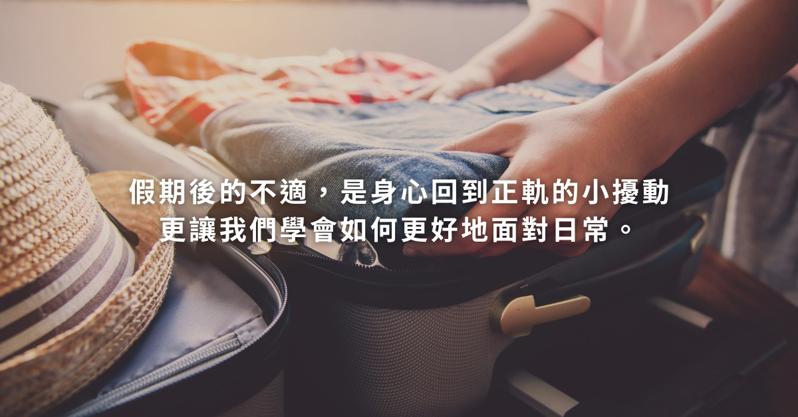
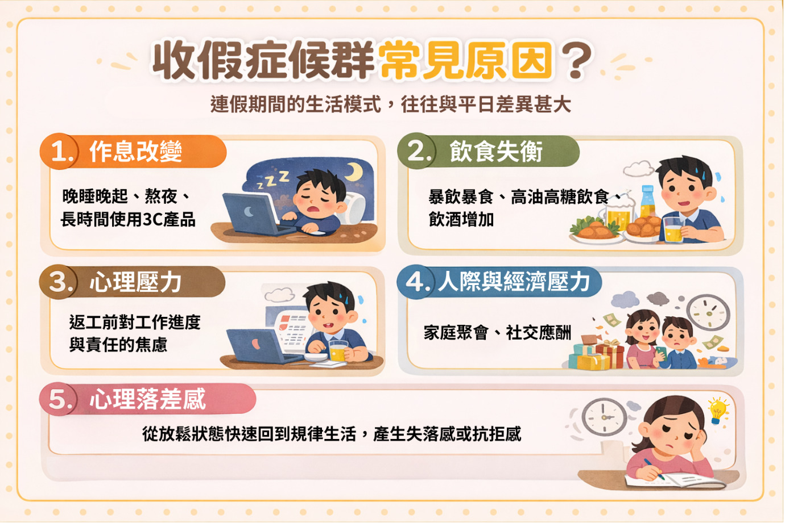
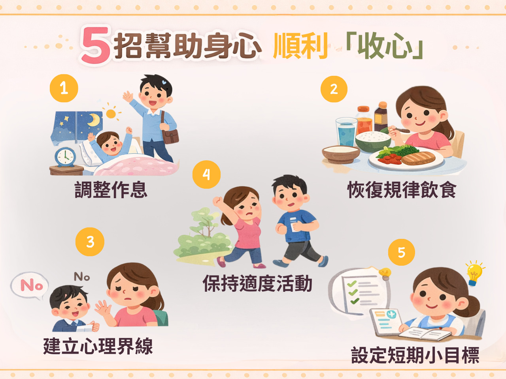

月號－健康大小事
月號－健康大小事|
春節長假結束，重新回到工作與生活軌道，心境上難免會從放鬆轉為緊繃，產生不適應的抗拒感。不少人出現疲倦、精神不濟、腸胃不適，或情緒低落、難以專注等「收假症候群」情形。讓我們一起練習調整心態，緩解收假後的不適與焦慮。 |
 |
|
什麼是收假症候群？常見原因及症狀? 收假症候群（Post-Vacation syndrome,PVS）是指在長假結束後，因生活作息、飲食型態與心理狀態突然改變，短期內出現的身心不適反應。雖然並非正式的醫學診斷，但在連假後相當常見，多數人可在數天至一週內逐漸恢復。 連假期間的生活模式，往往與平日差異甚大，可能包括：作息改變、飲食失衡、心理壓力、人際與經濟壓力及心理落差感。 |
 |
|
常見的生理及心理症狀如下： 1.生理症狀：疲勞、全身無力、精神不濟、失眠、腸胃不適、食慾不佳、免疫力下降或容易感冒等。 多數症狀屬於短暫性，會隨著生活節奏穩定而改善。 |
|
別急著一口氣恢復100%，請溫柔對待自己 很多人以為，只要假期結束，就該立刻100%回到高效率狀態。但事實上，人需要時間過渡，就像熱身一樣，才不會「心理抽筋」。將生活節奏開始重建，把工作節奏慢慢找回來，從熟悉、做得到的小事開始，讓身心順利「收心」。 |
|
5招幫助身心順利「收心」 1.調整作息：假期結束前，將就寢與起床時間調回平日節奏，避免一次性大幅改變，減少疲勞感。 |
 |
|
接受自己的情緒，不逼自己立刻達到狀態 收假提不起勁很常見，情緒不是開關，不會說關就關、說開就開，只是還在轉換中。 用心理學的方式與自己對話，讓壓力有出口，讓情緒被說出： 替自己設下一個小小的喘息點：一場週末放鬆、一次朋友午餐或一個這週可完成的小目標。不是逃避，而是在長跑裡，先把自己好好照顧住。 |
|
什麼時候需要特別留意？ 若持續出現以下情形，建議及早尋求專業協助： 1.身心不適超過2週皆未改善。 適時諮詢醫師或心理專業人員，有助於獲得更合適的協助。 |
|
結束是另一種開始，給自己一點時間與彈性，找到自己的收心步調，才能走得更穩更長。每個人重新上緊發條的方式都不同，有人靠清楚的待辦清單、有人的儀式是一杯咖啡、有人需要和信任的人說說話。找出適合自己的方式，溫柔地陪自己回到日常。 |
|
資料來源
1. 開工全身無力、腸胃不適？恐是收假症候群 身心醫教「5招」調整 |